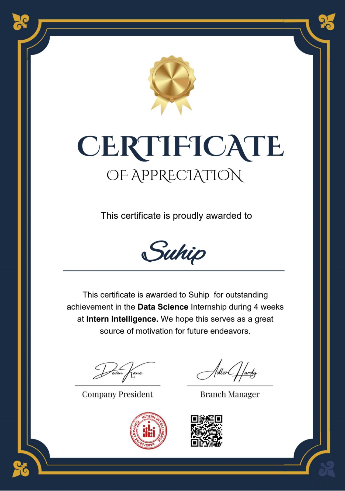

I recently graduated with a degree in Data Science & Artificial Intelligence from Mutah University with a GPA of 80.41. My academic journey has equipped me with a strong foundation in machine learning, Big Data, data analysis , and programming. I am eager to apply my skills to real-world challenges and contribute to innovative AI solutions. Passionate and dedicated with a strong foundation in machine learning, data analysis, and AI-driven solutions. Born on August 9, 2003, and based in Jerash, Jordan, I am eager to apply my skills to solve real-problems. Committed to continuous learning and contributing to innovative projects in the tech industry.
Udemy

100 Days of Code: The Complete Python Pro Bootcamp
Intern Intelligence
Data Science
IEEE Computer Society
Computer Vision
Amazon Web Service 'AWS'

Cloud Essentials
Makani
Robot Operating System
Amazon Web Service 'AWS'

Fundamentals of Machine Learning and Artificial Intelligence
Future Of Work
SOON

üöÄ Retail Sales Analytics with Power BI! üìäüõçÔ∏è I recently developed an interactive Power BI dashboard to analyze retail sales performance. The report provides valuable insights into revenue trends, product performance, customer behavior, and regional sales distribution.
View on GitHub
Optical Character Recognition (OCR) for car plates, also known as License Plate Recognition (LPR), is a specific application of OCR where an AI or machine learning system is trained to read and recognize the characters on vehicle license plates. It's commonly used for security, toll collection, parking management, and law enforcement.
View on GitHub
We enhanced the obstacles game using the Deep Q-Learning algorithm, allowing the agent to learn by interacting with its environment, enabling it to gain experiences quickly and efficiently.
View on GitHubText recognition can be approached both by AI models and humans, though the methods and capabilities differ greatly between the two.
View on GitHub
Enhanced the agent to learn by interacting with their environment (bombs), allowing them to gain experience quickly and efficiently.
View on GitHub
GUI-based School Management System using the Tkinter, and TkCalender libraries and messagebox and Ttk modules of the Tkinter library.üòä.
View on GitHub
A Quiz application has a set of questions and their answers and it checks for the correctness of answers that are submitted by users.
View on GitHub
Deployed a YOLOv5-based computer vision model for real-time object detection. Achieved 90% accuracy on a custom dataset.
View on GitHub
With 50 states in total, there are a lot of geography facts to learn about the United States. This map quiz game is here to help. See how fast you can pin the location of the lower 48.
View on GitHubStay tuned for more exciting projects in the fields of Data Science and Artificial Intelligence!
Visit My GitHub For More
Bachelor of Data Science and Artificial Intelligence
Graduation Year: From 2021/10/18 To 2025/1/21
Download university certificateAcademic Branch
Graduation Year:From 2019 To 2020
Download high school certificateFeel free to reach out to me for collaborations or opportunities!